Pull request a mano:
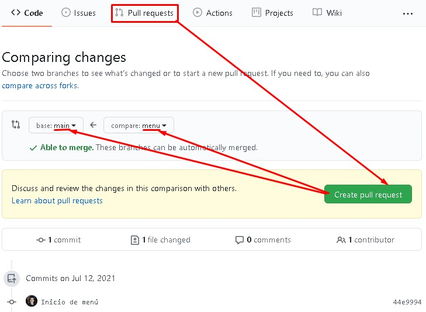Pull request directo:
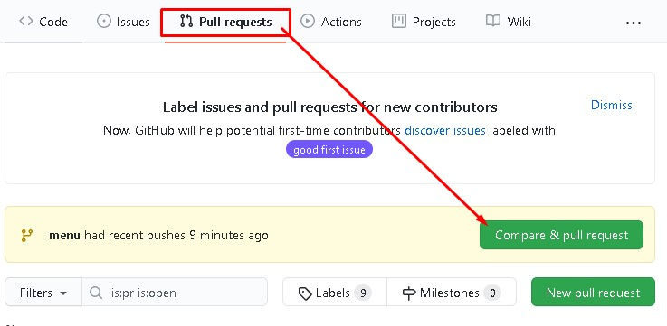 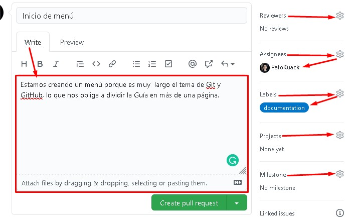Al pull request se le pueden agregar detalles:
- El título del pull request es el nombre del commit.
- Se le puede colocar una descripción o un mensaje para quien lo revise.
- En reviewers se le pueden agregar usuarios que lo revisen.
- En assignees se le asigna a un usuario.
- En labels se le pueden agregar etiquetas.
- En project se agrupan repositorios dentro de GitHub.
- En milestone se indica que se cumplió un objetivo que se tenía y que el pull request lo representa.
El pull request describe las acciones del código y el usuario correspondiente se encarga de revisar el código y pedir cambios o ejecutar el merge.
Vista del reviewer o assignee del pull request:
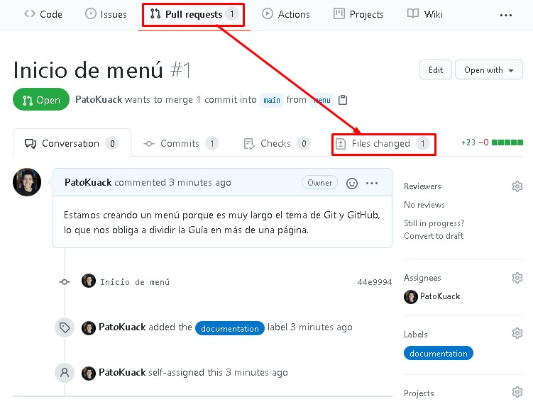 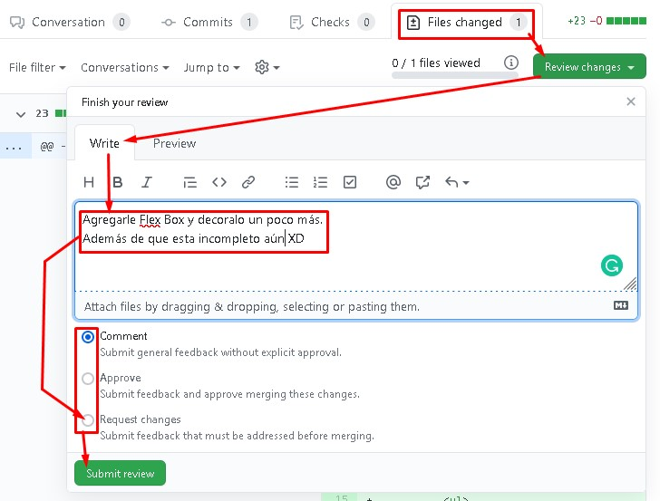Desde la pestaña "Files changed" se pueden agregar comentarios, aprobar el merge o pedir cambios al proyecto.
Vista del líder del proyecto ya listo para pedir de nuevo una revisión para autorizar un merge:
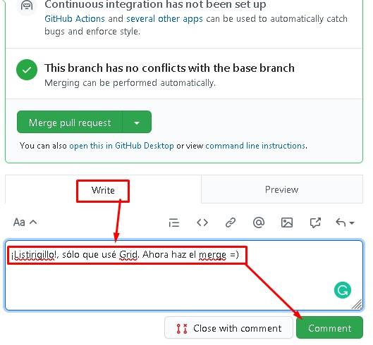Vista del reviewer revisando los cambios. Se visualiza la última aportación o commit:
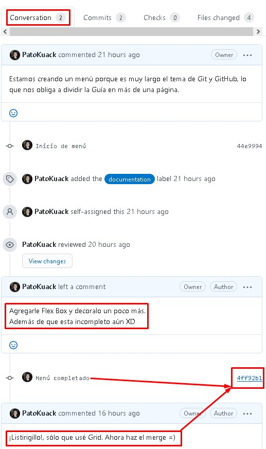Vista del reviewer aprobando los cambios:
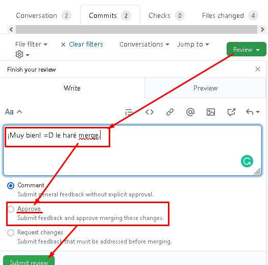Vista del líder de proyectos realizando el merge de las ramas completas:
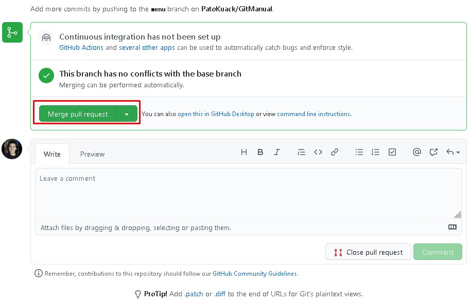 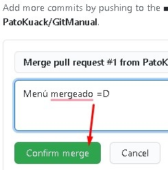Vista del líder del proyecto. Una vez que el merge se realizó se puede eliminar la rama si es que ya no se utilizará, aunque esta opción no eliminará la rama en el entorno de trabajo en Git:
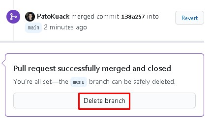Colaboración.
Un colaborador es un usuario que sugiere aportaciones al proyecto sin ser parte del equipo de trabajo del proyecto.
Para ser un colaborador de algún proyecto se necesita:
- Activar Watch
- Con esta función podremos recibir notificaciones en el momento en que haya conversaciones del proyecto.
- Star
- Indica que un proyecto nos gusta y nos permite recibir notificaciones si hay cambios en el proyecto.
- Fork
- Toma una copia del estado actual del proyecto y lo clona como un proyecto propio si es que el proyecto es público.
Se clona el proyecto al disco duro con la opción code, y depende si se implementaron la llave SSH o solo la HTTPS en tu computadora se selecciona la opción respectiva.
En la terminal de la computadora personal se posiciona en el directorio en el que se desea almacenar el proyecto que se clonó en GitHub con el comando cd y seguido a eso se usa el comando "git clone URL_copiada" para copiar el proyecto al disco duro en el directorio especificado.
Si se hacen cambios y contribuciones al proyecto clonado se puede crear un pull request y nos conecta directamente con el proyecto original. Se puede pedir que se agreguen las contribuciones si es que no hay conflictos con el repositorio original, después se puede esperar, agregar comentarios al pull request o cerrar (eliminar) el pull request.
Si el dueño o líder del proyecto acepta el pull request le hará un merge.
Fork
Para mantener actualizado el proyecto se crea una rama especial
- git remote add upstream URL_(HTTPS_o_SSH)
- Con este comando se crea una nueva rama, generalmente se usa el nombre "upstream" en la rama que se utiliza como un remoto para importar datos de un proyecto que es ajeno y así poder fusionarlo a la rama principal de nuestro proyecto importado.
- El URL que se utiliza es el del proyecto ajeno que queremos clonar contantemente para mantener actualizados sus cambios.
- git pull upstream main
- Importa a "upstream" el contenido que hay en la rama "main".
- git commit -am "mensaje"
- Hace un commit a upstream.
- git push origin main
- Hace un push con los cambios.
La rama "upstream" es un apuntador que apunta hacia el repositorio de GitHub original, cada que el proyecto original hace cambios, éste se actualizará con el pull y luego enviará los cambios a nuestro main local.